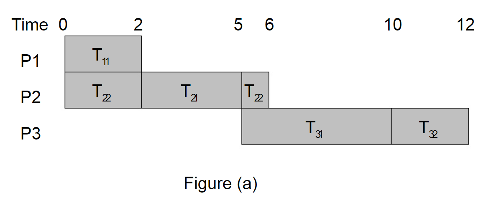
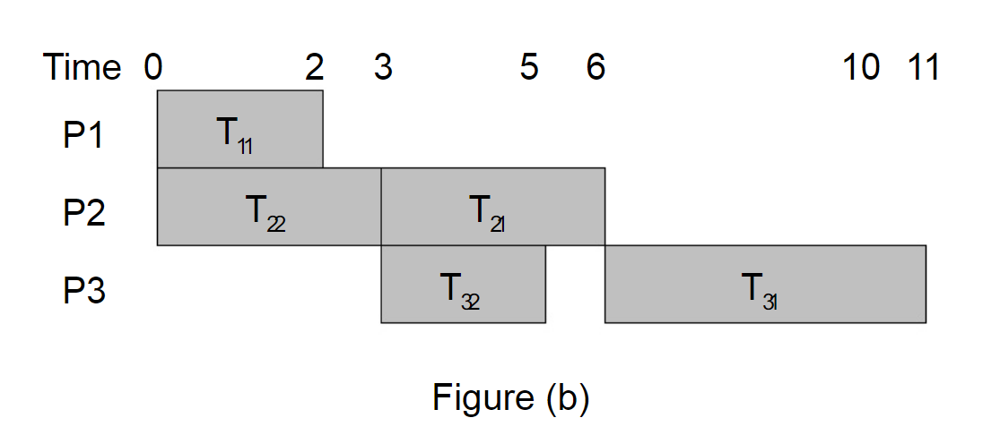

Pre-emptive Scheduling :
The running task is interrupted for some time and resumed later when the priority task has finished its execution.
Eg: Round robin

Pre-emptive Scheduling :
A running task is executed till completion. It cannot be interrupted.
Eg First In First Out
